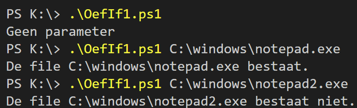
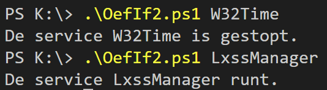
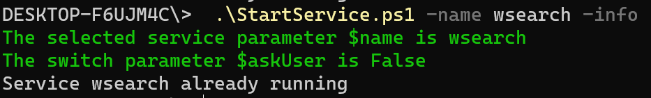
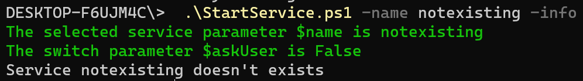
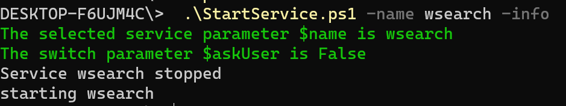

1. Bestaan van een bestand — OefIf1.ps1
Maak een script dat een bestandspad als eerste argument ontvangt.
- Zonder argument verschijnt
Geen parameter. - Voor een bestaand bestand verschijnt
De file <pad> bestaat.. - Anders verschijnt
De file <pad> bestaat niet.. - Gebruik
Test-Path -PathType Leaf.

Mijn antwoord:
De volgorde telt: eerst controleren of er een parameter is, daarna met
Tests:
scripts/OefIf1.ps1<#
.SYNOPSIS
Controleert of een bestand bestaat.
.DESCRIPTION
Ontvangt een bestandspad als eerste argument en meldt of het bestand bestaat.
Zonder argument verschijnt "Geen parameter".
.PARAMETER filePath
Het pad naar een bestand. Eerste positionele argument.
.NOTES
Author: Angelo Switon (PXL Student)
.EXAMPLE
./scripts/OefIf1.ps1 C:\Windows\notepad.exe
#>
param(
[string]$filePath
)
if ([string]::IsNullOrWhiteSpace($filePath)) {
Write-Output 'Geen parameter'
} elseif (Test-Path -LiteralPath $filePath -PathType Leaf) {
Write-Output "De file $filePath bestaat."
} else {
Write-Output "De file $filePath bestaat niet."
}param([string]$filePath) maakt filePath het eerste positionele argument. Wordt het weggelaten, dan is de waarde een lege tekst; [string]::IsNullOrWhiteSpace() vangt dat op.De volgorde telt: eerst controleren of er een parameter is, daarna met
elseif of het bestand bestaat, en anders (else) bestaat het niet. Test-Path -PathType Leaf geeft alleen True voor een bestand, niet voor een map.Tests:
./scripts/OefIf1.ps1 → Geen parameter./scripts/OefIf1.ps1 C:\Windows\notepad.exe → De file C:\Windows\notepad.exe bestaat../scripts/OefIf1.ps1 C:\Windows\notepad2.exe → De file C:\Windows\notepad2.exe bestaat niet../scripts/OefIf1.ps1 C:\Windows → De file C:\Windows bestaat niet. (een map is geen bestand)
Geavanceerd Antwoord:
Ook een map herkennen, en "geen parameter" met
De volgorde van de tests telt:
Ook een map herkennen, en "geen parameter" met
$PSBoundParameters controleren (Course, hoofdstuk 10):param(
[string]$filePath
)
if (-not $PSBoundParameters.ContainsKey('filePath') -or [string]::IsNullOrWhiteSpace($filePath)) {
Write-Output 'Geen parameter'
} elseif (Test-Path -LiteralPath $filePath -PathType Leaf) {
Write-Output "De file $filePath bestaat."
} elseif (Test-Path -LiteralPath $filePath -PathType Container) {
Write-Output "$filePath is een map, geen file."
} else {
Write-Output "De file $filePath bestaat niet."
}$PSBoundParameters.ContainsKey('filePath') vraagt: "heeft de gebruiker deze parameter meegegeven?" De Course raadt dit aan om aanwezigheid te controleren. [string]::IsNullOrWhiteSpace() vangt daarnaast een lege tekst op, bv. ./scripts/OefIf1.ps1 ''.De volgorde van de tests telt:
elseif wordt alleen bekeken als de vorige tests onwaar waren../scripts/OefIf1.ps1 C:\Windows → C:\Windows is een map, geen file.
2. Status van een service — OefIf2.ps1
Maak een script dat een servicenaam ontvangt en meldt of de service draait of gestopt is. Handel ook een ontbrekende parameter en een onbekende servicenaam af zonder een ongecontroleerde foutmelding.

Mijn antwoord:
Daarna vergelijken we de property
Tests:
scripts/OefIf2.ps1<#
.SYNOPSIS
Toont of een service draait of gestopt is.
.DESCRIPTION
Ontvangt een servicenaam als eerste argument en meldt de status van de
service. Een ontbrekende parameter en een onbekende service geven een
duidelijke melding in plaats van een foutmelding.
.PARAMETER serviceName
De naam van de service. Eerste positionele argument.
.NOTES
Author: Angelo Switon (PXL Student)
.EXAMPLE
./scripts/OefIf2.ps1 W32Time
#>
param(
[string]$serviceName
)
if ([string]::IsNullOrWhiteSpace($serviceName)) {
Write-Output 'Geen parameter'
} else {
$service = Get-Service -Name $serviceName -ErrorAction SilentlyContinue
if ($null -eq $service) {
Write-Output "De service $serviceName bestaat niet."
} elseif ($service.Status -eq 'Running') {
Write-Output "De service $serviceName runt."
} elseif ($service.Status -eq 'Stopped') {
Write-Output "De service $serviceName is gestopt."
} else {
Write-Output "De service $serviceName heeft de status $($service.Status)."
}
}-ErrorAction SilentlyContinue onderdrukt de rode foutmelding van Get-Service bij een onbekende naam. $service is dan leeg, wat we testen met $null -eq $service ($null links, zoals in de Course).Daarna vergelijken we de property
Status met -eq. De laatste else vangt andere toestanden op, bv. Paused.Tests:
./scripts/OefIf2.ps1 → Geen parameter./scripts/OefIf2.ps1 W32Time → De service W32Time is gestopt. (als W32Time gestopt is)./scripts/OefIf2.ps1 WSearch → De service WSearch runt. (als WSearch draait)./scripts/OefIf2.ps1 notexisting → De service notexisting bestaat niet.
Geavanceerd Antwoord:
De status kiezen met
Met
De status kiezen met
switch (Course, hoofdstuk 10):param(
[string]$serviceName
)
if ([string]::IsNullOrWhiteSpace($serviceName)) {
Write-Output 'Geen parameter'
} else {
$service = Get-Service -Name $serviceName -ErrorAction SilentlyContinue
if ($null -eq $service) {
Write-Output "De service $serviceName bestaat niet."
} else {
switch ($service.Status) {
'Running' { Write-Output "De service $serviceName runt." }
'Stopped' { Write-Output "De service $serviceName is gestopt." }
default { Write-Output "De service $serviceName heeft de status $($service.Status)." }
}
}
}switch vergelijkt één waarde met meerdere gevallen; default vangt elke andere status op (bv. Paused).Met
switch hoef je $service.Status maar één keer te noemen, in plaats van in elke elseif opnieuw.
3. Service voorwaardelijk starten — StartService.ps1
Maak een geavanceerd script met:
- verplichte parameter
ServiceName; - switches
AskUserenInfo; - informatie over de parameters wanneer
-Infoaanwezig is; - een duidelijke melding voor een onbekende service;
- geen actie wanneer de service al draait;
- starten van een gestopte service, rechtstreeks of na bevestiging met
-AskUser; - een
switchvoor de antwoordenyenn, met een standaardtak voor ongeldige invoer.
Controleer de gegenereerde syntax met Get-Command.

LET OP: Het starten van een service vereist doorgaans administratorrechten. Werk alleen op een labsysteem en kies een onkritieke testservice. Noteer vóór de test de oorspronkelijke status en herstel die nadien met
Stop-Serviceindien nodig.
Test minstens: draaiend, gestopt, onbekend, -Info, -AskUser met y, n en een ongeldig antwoord.






Mijn antwoord:
De backtick in
Syntax:
Tests (als administrator; WSearch is de testservice):
Oorspronkelijke status noteren:
antwoord
antwoord
antwoord
Herstellen: controleer met
Let op: de syntax-screenshot toont
scripts/StartService.ps1<#
.SYNOPSIS
Start een service wanneer ze niet draait.
.DESCRIPTION
Controleert of de service bestaat en of ze draait. Een gestopte service
wordt gestart: rechtstreeks, of na bevestiging wanneer -AskUser gebruikt
wordt. Met -Info worden eerst de parameters getoond.
Het starten van een service vereist administratorrechten.
.PARAMETER ServiceName
De naam van de service. Verplicht.
.PARAMETER AskUser
Vraag bevestiging (y/n) voordat de service gestart wordt.
.PARAMETER Info
Toon informatie over de parameters.
.NOTES
Author: Angelo Switon (PXL Student)
.EXAMPLE
./scripts/StartService.ps1 -ServiceName WSearch
.EXAMPLE
./scripts/StartService.ps1 -ServiceName WSearch -Info -AskUser
#>
[CmdletBinding()]
param(
[Parameter(Mandatory)]
[string]$ServiceName,
[switch]$AskUser,
[switch]$Info
)
if ($Info) {
Write-Host "The selected service parameter `$ServiceName is $ServiceName" -ForegroundColor Green
Write-Host "The switch parameter `$AskUser is $($AskUser.IsPresent)" -ForegroundColor Green
}
$service = Get-Service -Name $ServiceName -ErrorAction SilentlyContinue
if ($null -eq $service) {
Write-Host "Service $ServiceName doesn't exist"
} elseif ($service.Status -eq 'Running') {
Write-Host "Service $ServiceName already running"
} else {
Write-Host "Service $ServiceName stopped"
if ($AskUser) {
$answer = Read-Host "Do you want to start $ServiceName service ? (y/n)"
switch ($answer) {
'y' {
Write-Host "starting $ServiceName"
Start-Service -Name $ServiceName
}
'n' {
Write-Host "don't start the service $ServiceName"
}
default {
Write-Host "Invalid answer '$answer': the service $ServiceName is not started"
}
}
} else {
Write-Host "starting $ServiceName"
Start-Service -Name $ServiceName
}
}[CmdletBinding()] maakt het een geavanceerd script. ServiceName is Mandatory: zonder waarde vraagt PowerShell er zelf om. AskUser en Info zijn [switch]-parameters: hun naam vermelden zet ze aan.De backtick in
`$ServiceName toont de naam letterlijk in plaats van de waarde.if / elseif / else kiest tussen: bestaat niet, draait al (geen actie) of gestopt (starten). Bij -AskUser kiest de switch op het antwoord: 'y' start, 'n' start niet en default vangt elk ander antwoord op. switch is niet hoofdlettergevoelig, dus Y werkt ook.Syntax:
Get-Command .\scripts\StartService.ps1 -Syntax → .\StartService.ps1 [-ServiceName] <string> [-AskUser] [-Info] [<CommonParameters>]Tests (als administrator; WSearch is de testservice):
Oorspronkelijke status noteren:
Get-Service -Name WSearch./scripts/StartService.ps1 → PowerShell vraagt ServiceName: (verplichte parameter); invullen: WSearch → Service WSearch already running./scripts/StartService.ps1 -ServiceName WSearch -Info → The selected service parameter $ServiceName is WSearch, The switch parameter $AskUser is False, Service WSearch already running./scripts/StartService.ps1 -ServiceName notexisting -Info → ... Service notexisting doesn't existStop-Service -Name WSearch, daarna ./scripts/StartService.ps1 -ServiceName WSearch → Service WSearch stopped, starting WSearchStop-Service -Name WSearch, daarna ./scripts/StartService.ps1 -ServiceName WSearch -AskUser:antwoord
n → don't start the service WSearchantwoord
x → Invalid answer 'x': the service WSearch is not startedantwoord
y → starting WSearchHerstellen: controleer met
Get-Service -Name WSearch dat de status opnieuw de oorspronkelijke is (draaide de service eerst niet: Stop-Service -Name WSearch).Let op: de syntax-screenshot toont
-name, -askUser en -info. De opdracht vraagt ServiceName, AskUser en Info; die namen staan in dit script.
Geavanceerd Antwoord:
Uitbreidingen met
Uitbreidingen met
-WhatIf, meerdere antwoorden per geval en een controle na het starten (Course, hoofdstukken 09 en 10):[CmdletBinding(SupportsShouldProcess = $true)]
param(
[Parameter(Mandatory)]
[string]$ServiceName,
[switch]$AskUser,
[switch]$Info
)
if ($Info) {
Write-Host "The selected service parameter `$ServiceName is $ServiceName" -ForegroundColor Green
Write-Host "The switch parameter `$AskUser is $($AskUser.IsPresent)" -ForegroundColor Green
}
$service = Get-Service -Name $ServiceName -ErrorAction SilentlyContinue
if ($null -eq $service) {
Write-Host "Service $ServiceName doesn't exist"
} elseif ($service.Status -eq 'Running') {
Write-Host "Service $ServiceName already running"
} else {
Write-Host "Service $ServiceName stopped"
$start = $true
if ($AskUser) {
$answer = Read-Host "Do you want to start $ServiceName service ? (y/n)"
switch -Regex ($answer) {
'^(y|yes|j|ja)$' { $start = $true }
'^(n|no|nee)$' { $start = $false; Write-Host "don't start the service $ServiceName" }
default { $start = $false; Write-Host "Invalid answer '$answer': the service $ServiceName is not started" }
}
}
if ($start -and $PSCmdlet.ShouldProcess($ServiceName, 'Start service')) {
Write-Host "starting $ServiceName"
Start-Service -Name $ServiceName
Write-Host "Status now: $((Get-Service -Name $ServiceName).Status)"
}
}switch -Regexmet^(y|yes|j|ja)$aanvaardt ookyes,jenja.^en$zorgen dat het volledige antwoord moet passen.- Het starten staat op één plaats: de variabele
$startonthoudt de beslissing. ./scripts/StartService.ps1 -ServiceName WSearch -WhatIf→What if: Performing the operation "Start service" on target "WSearch".De service wordt niet gestart.- Na het starten toont het script de nieuwe status, als bewijs dat het gelukt is.
Eindcontrole
- De drie scripts hebben exact de gevraagde namen.
- Alle beslissingspaden zijn getest en beschreven in
answers.md. - Onbekende bestanden en services veroorzaken geen ongecontroleerde fout.
- De oorspronkelijke servicestatus is hersteld.
- Alle scripts parsen zonder syntaxfouten.
- Je hebt je wijzigingen gecommit en gepusht.